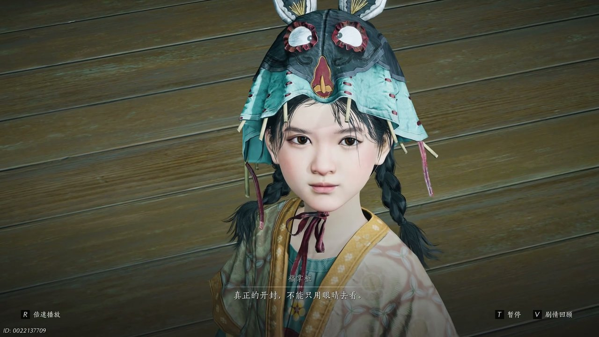
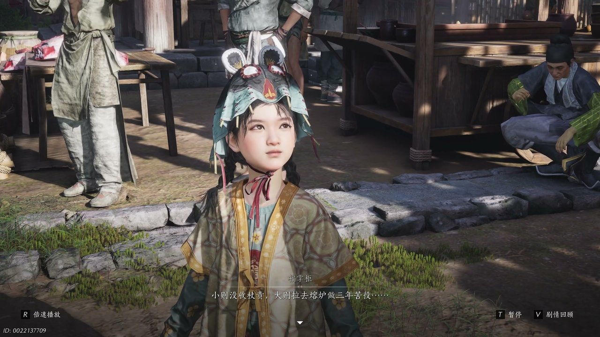
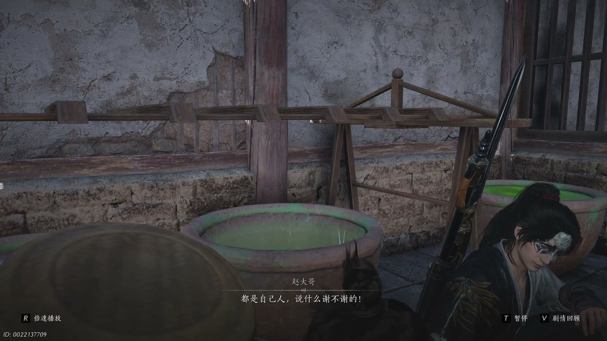
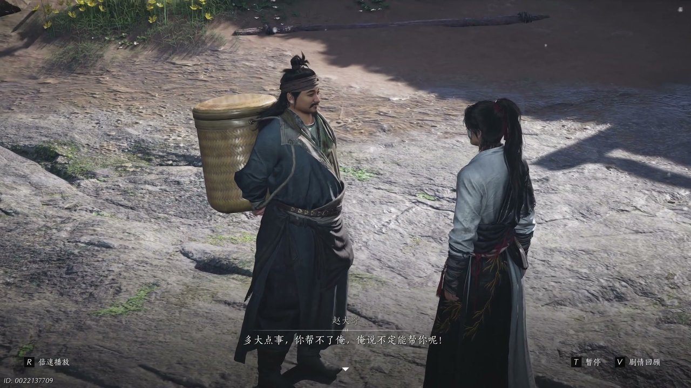
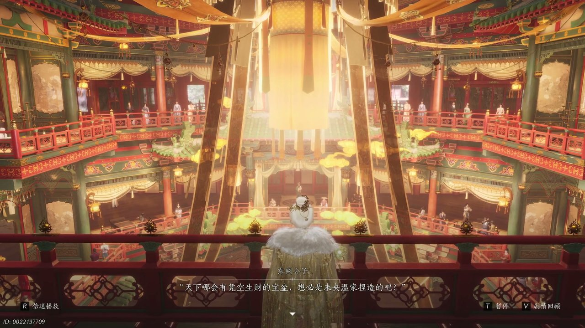
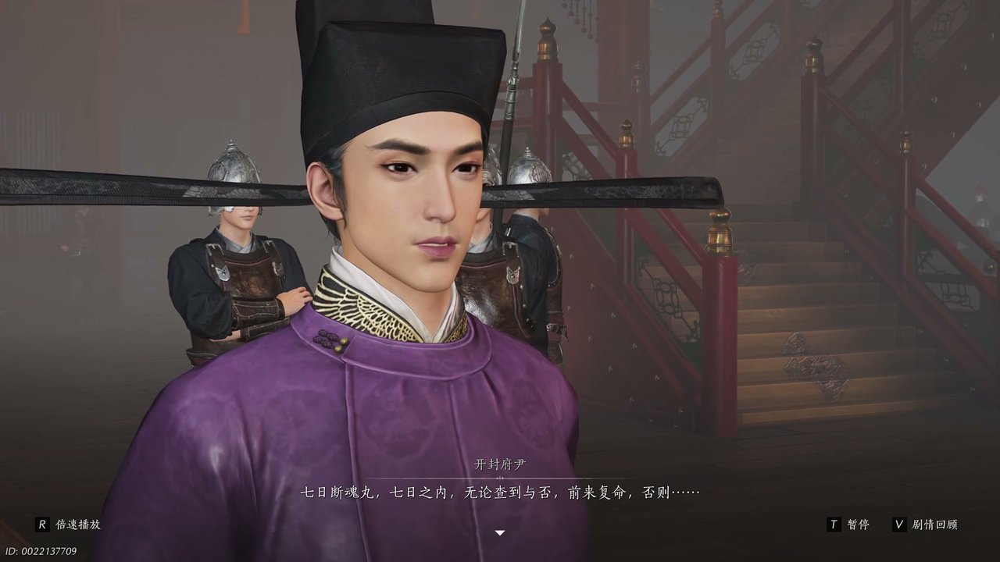

燕云背后的故事：第5集 聚宝盆
燕云背后的故事：第5集 聚宝盆

朋友们，上一集咱们说到——识破市井骗局、偶遇盈盈捉弄、锦囊暗藏线索；新来的朋友可能纳闷，初入开封的少年，为何无端卷入一场宝物纷争？简单说，少东家追查神仙渡覆灭真相，闯入开封闹市，接连遇上圈套，始终找不到东阙公子踪迹。可他哪知道，一枚小小的锦囊背后，牵扯着开封全城的钱财乱象。这不，福掌柜主动现身，要领着他去见识繁华表象之下真正的开封模样。

街巷之中人声嘈杂，少东家皱着眉头望着往来不断的行人，满脸不解地开口：“唉没想到还没进城，就已经遇到这么多骗子了，你们开封难道不是富庶得很吗？”福掌柜朝他摆了摆手，抬手示意他跟上自己的脚步，轻声说道：“你跟我来，带你去听听真正的开封。”少东家微微侧目，望着繁华的街巷依旧疑惑：“真正的开封，不是漂亮又热闹的开封？”福掌柜脚步不停，穿过喧闹的商铺拐进僻静小巷，缓缓解释：“是大家伙心里的开封，真正的开封不能只用眼睛去看，要用耳朵去听。”街巷深处传来妇人啼哭、百姓哀叹的声响，福掌柜轻声哼唱着歌谣，诉说着市井百姓的苦楚，继而神色凝重开口：“熔炉的钱越来越多，大家伙手里的钱却越来越少，现在你知道了，这就是真正的开封。”话音落下，福掌柜整理衣衫，告知少东家接下来二人一同前往樊楼，探寻聚宝盆背后的隐秘。

二人沿着汴河街道前行，腰间钱袋格外显眼，一队官兵径直拦住去路，官兵头子面色凶狠呵斥：“大摇大摆地带这么多堂钱上街，当我们都是傻子是吧。”一旁壮汉慌忙辩解，声称钱袋并非自己所有，是一位抱孩子的寡妇转交，还嫁祸给身旁的少东家。少东家脸色一沉，当场戳破对方的说辞，直言对方刻意栽赃陷害。福掌柜神色慌张，低声提醒少东家：“堂前收缴令规定带堂钱上街就是犯罪，小泽没收杖责，大泽拉去熔炉做3年苦役。”少东家听闻心头一紧，下意识询问逃跑方向，福掌柜却表示已然来不及，官兵已然围拢过来。危急时刻福掌柜展露身手，身形灵活地躲开官兵抓捕，一番缠斗之后，二人趁着混乱仓皇逃窜，一路躲进街边的商铺之中，才暂时摆脱追捕。

商铺老板热心将二人藏进隔间，避开四处搜查的官兵，待官兵走远之后，才招呼二人出来。少东家对着身旁的赵大哥拱手行礼，满是感激：“赵大哥，你出手相救，不然我和小福肯定被抓了。”赵大哥摆了摆手，神态豪爽不在意地说道：“还都是自己人，说什么谢不谢啊。”他目光落在少东家身上，询问其姓氏，得知对方姓姜之后，神色微微诧异，误以为少东家是自己熟识之人，片刻之后又摇头作罢，自认是认错了人。此时屋外官兵再次搜查临近，商铺老板连忙示意众人噤声，胡乱指引官兵去往其他方向，帮二人再次躲开追查。少东家感念对方恩情，告知赵大哥自己急着前往樊楼参加群英会，想要寻找东阙公子温无缺。

赵大哥听闻少东家也要前往樊楼，面露喜色，表示自己此行目的也是去群英会寻找东阙公子。少东家面露难色，坦言自己并没有群英会专属的入门凭证，根本无法进入樊楼。赵大哥爽朗一笑，拍着胸脯宽慰对方：“害多大点事啊，你帮不了俺，俺说不定能帮你呢，俺找兄弟打点一下，说不定能找到进去的门路。”少东家又惊又喜，当即想要一同跟随前往，赵大哥却叮嘱二人分头行动，避免太过惹眼，约定在码头会合，还顺带带上了一直跟着众人的小福。不久之后，二人在码头碰面，赵大哥果真寻来了潜入樊楼的法子，准备趁着运送宾客的船只，悄悄混进群英会场地之中。

众人躲藏在船舱之内，顺利混入樊楼群英会现场，楼内汇聚了各路江湖豪杰，张错、唐心慈、方旭等江湖知名人物悉数到场。醉花阴弟子在门口二次查验宾客身份，防止有人浑水摸鱼，少东家与赵大哥一时难以通过查验，赵大哥本打算硬闯，却又想出换装潜入的计策。二人换上仆从服饰，借着宾客混乱的时机，顺利进入群英会大堂。东阙公子温无缺端坐主位，向着在场众人开口：“天下哪有会凭空生财的宝盆，想必是未央温家捏造的吧，世人做不到的，我未央城未必做不到。”他当众提出要拿出生金瓯宝物，邀请一位英雄上前验证宝物真假，引得在场众人纷纷议论，各方势力都争相想要上前一试。

史大人抢先上前验证生金瓯，宝物异动之后现场陷入混乱，生金瓯不翼而飞，开封府尹当即下令封锁全场，逐一排查在场所有人。少东家没有群英帖，成为重点怀疑对象，被府尹当场拿下。东阙公子随口提及离人泪美酒，让少东家确定对方就是自己要寻找之人。开封府尹认定少东家盗取宝物，将他押至一旁审问，赵大哥出面为其担保，府尹提出条件，逼迫少东家服下七日断魂丸：“7日之内无论查到与否前来复命，否则毒发身亡。”少东家无奈服下毒丸，获得追查盗宝真凶、自证清白的机会。之后他与赵大哥会合，赵大哥拿出一件爆炸损毁的物件，告知可以带着物件去找蒲万世之辨认，二人决定先前往戏院寻找这位智者，再设法再次接触被看管的东阙公子。
这一集看下来，我最大的感受就是樊楼群英会暗流涌动，各方势力各怀心思。上一集里我们只知道市井骗局、盈盈离去、锦囊引路；到了这一集，误入樊楼、宝物失窃、身中剧毒。聚宝盆究竟是真是假？七日断魂丸该如何化解？蒲万世之藏着怎样的秘密？诸多线索交织缠绕，少东家身中剧毒时间紧迫，既要追查宝物下落自证清白，又要继续探寻神仙渡覆灭的真相。下一集核心大事件便是前往戏院寻访蒲万世之，破解物件谜团，少东家身负剧毒时间所剩无几。核心冲突：寻找蒲万世之，探查宝物失窃真相。观众一：七日时限将至，少东家能否顺利找到解药化解剧毒？观众二：蒲万世之能否辨认出残破物件的来历？下一集关键词：戏院寻访、剧毒危机、线索深挖。
关于我们
📱 公众号名称：三天游戏
✍️ 作者：曾三天
扫码关注公众号，获取每日最新资讯

商务合作与版权
商务合作 / 内容投稿 / 品牌推广
请关注公众号「三天游戏」后台留言联系
版权声明：本文由作者整理，转载需注明出处。